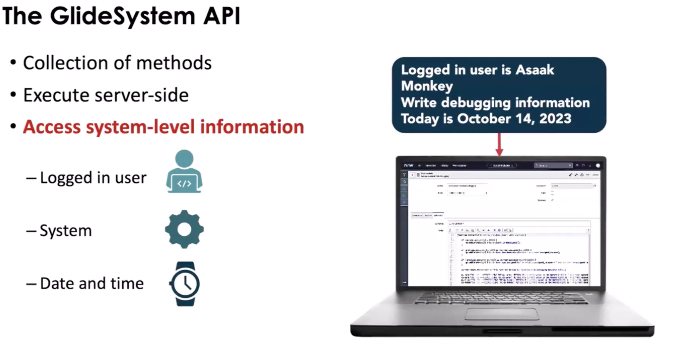
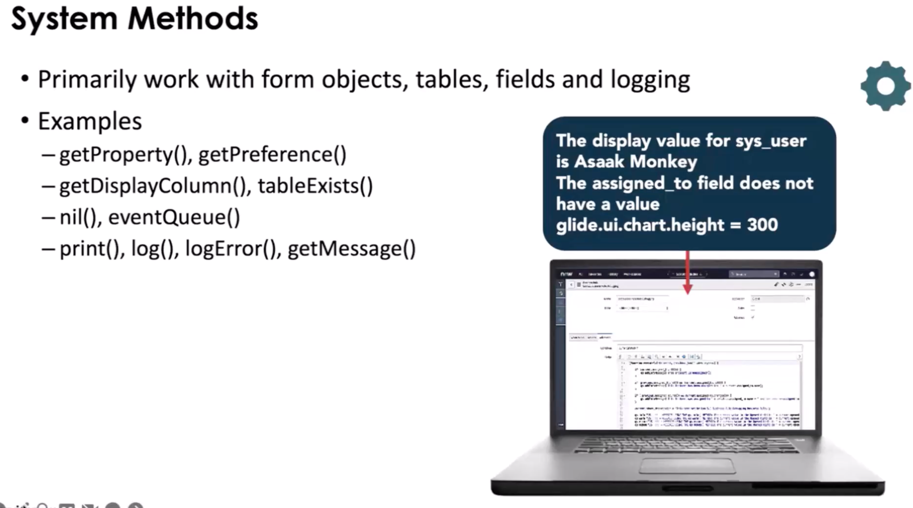
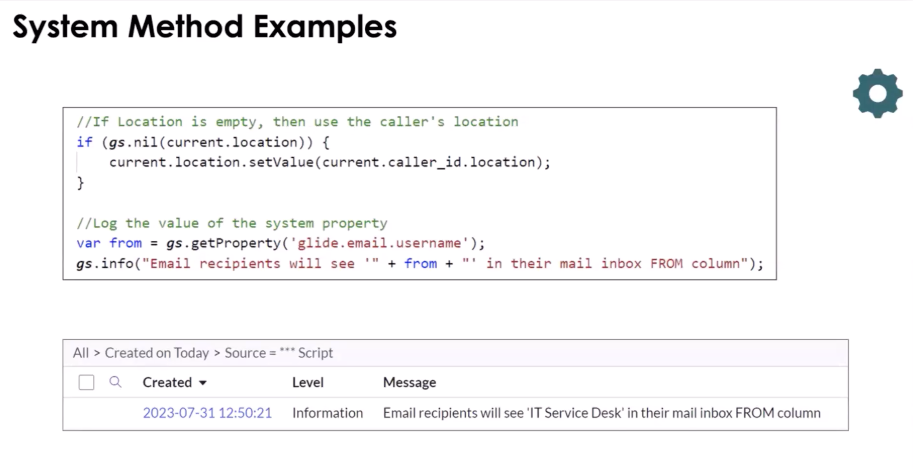
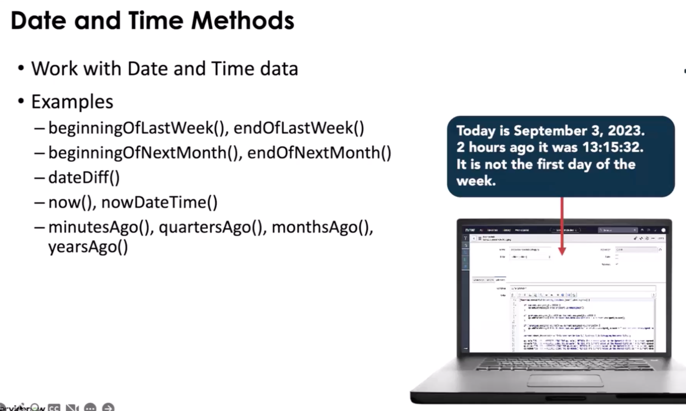
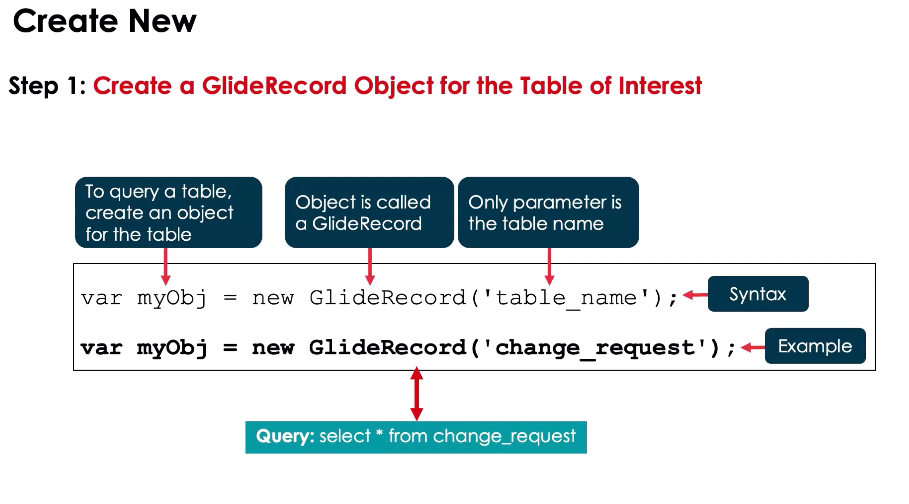
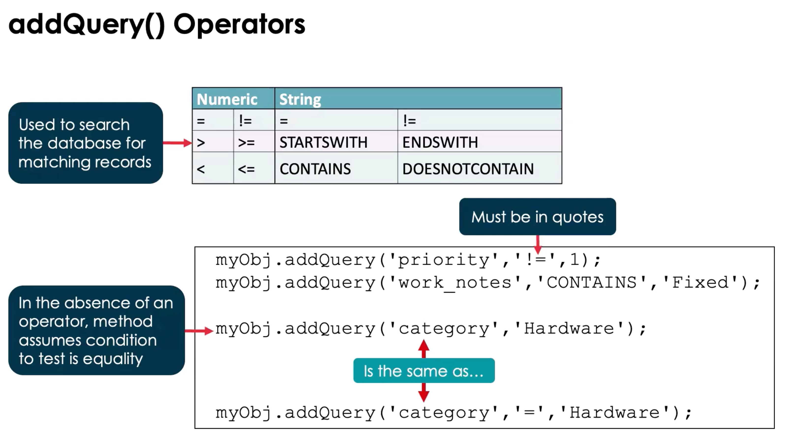
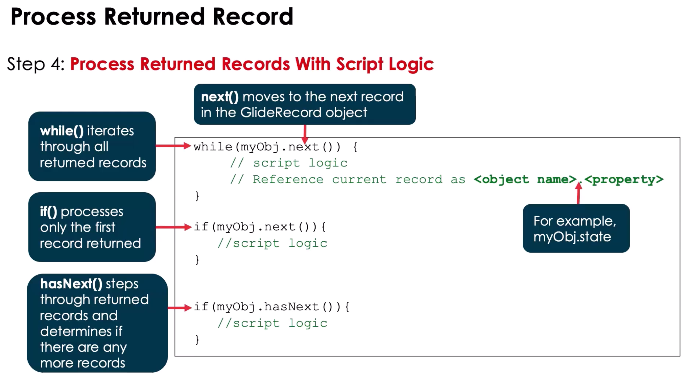
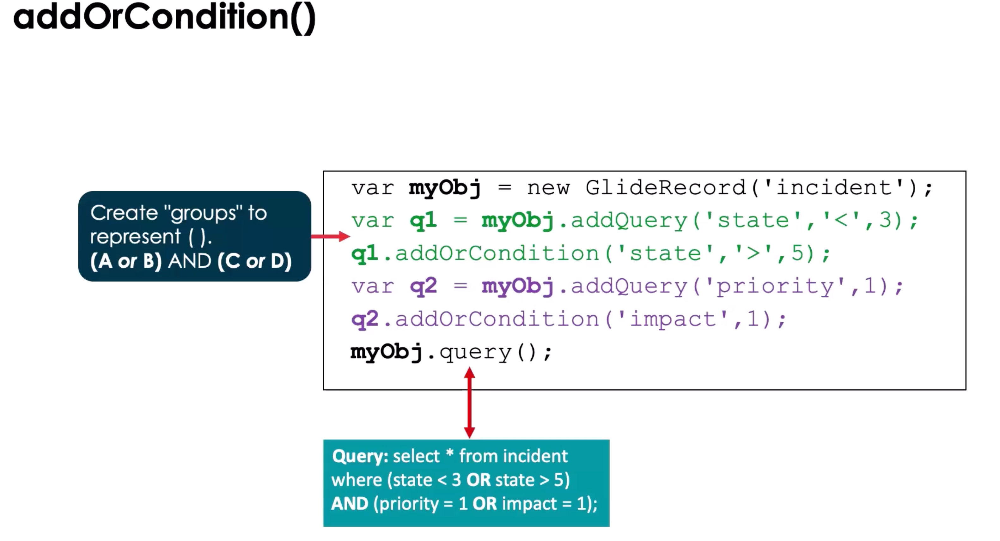
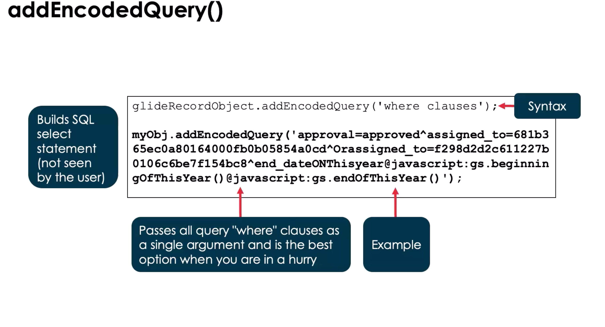

Glide API Notes: GlideSystem & GlideRecord
This is a focused reference for GlideSystem (gs) and GlideRecord, the core server-side APIs in ServiceNow. Use it for study, hands-on practice, or quick lookup.
Essentially it is a JavaScript class that can be used anywhere in the platform where server-side JavaScript is accepted.
- Business Rules
- UI Actions
1. GlideSystem (gs)
Purpose:
- Provides system-level utilities and context information.
- Mostly used in server-side scripts (Business Rules, Script Includes, Scheduled Scripts, Flow Script Steps).
Runs:
- Server

Common Methods & Use Cases:
| Method | Description | Example |
|---|---|---|
gs.log(message, source) |
Log info to system logs | gs.log('Incident closed', 'IncidentBR'); |
gs.info(message) |
Log info (simpler) | gs.info('Process started'); |
gs.warn(message) |
Log a warning | gs.warn('High load'); |
gs.error(message) |
Log an error | gs.error('Failed update'); |
gs.getUser() |
Current user object | var user = gs.getUser(); |
gs.getUserID() |
Current user's sys_id | var user = gs.getUserID(); |
gs.getUserName() |
Current user's username | var name = gs.getUserName(); |
gs.getUserDisplayName() |
Current user's display name | var display = gs.getUserDisplayName(); |
gs.nowDateTime() |
Current date-time | var dt = gs.nowDateTime(); |
gs.daysAgo(n) |
Date n days ago | var weekAgo = gs.daysAgo(7); |
gs.nil(object) |
Checks if object is null/undefined | if (gs.nil(current.short_description)) {...} |
gs.addInfoMessage(msg) |
Adds a message to UI | gs.addInfoMessage('Update successful'); |
gs.addErrorMessage(msg) |
Adds an error message to UI | gs.addErrorMessage('Cannot save record'); |
gs.sleep(ms) |
Pause execution (server) | gs.sleep(500); |
gs.nil(object) |
Check if there is no value | gs.nil(current.location); |


Note: See the ServiceNow docs to review the GluideDate and GluideDatsTime API's to see other methods used to manipulate dates.

Common Mistakes / Gotchas:
- Using
gs.*on client scripts (won’t work) - Overusing logs in large batch scripts (can slow down execution)
- Forgetting that
gs.addInfoMessage()only appears in UI, not API calls
1-Min Example:
// Log user info when incident is closed
if (current.state == 7) {
// Closed
gs.log(
"Incident " + current.number + " closed by " + gs.getUserName(),
"IncidentBR",
);
}
Scoped GlideSystem:
You must use Scoped APIs when developing scripts for scoped applications. There are error messages to inform users if there are using a method that is in the wrong scope.
Examples:
- debug()
- erro()
- info()
- warn()
- isDebugging()
Navigate to System Logs > System Log > Errors to see output
2. GlideRecord (gr)
Purpose:
- Server-side API to query, create, update, and delete records in tables.
Runs:
- Server only (Business Rules, Script Includes, Scheduled Scripts, Flow Script Steps)
Note: Can be called on the client side but there might be some performance issues

Basic Workflow:
var gr = new GlideRecord("incident"); // Table name
gr.addQuery("priority", 1); // Query condition
// add other query conditions as needed
gr.query(); // Execute query
while (gr.next()) {
// Iterate results
gs.log(gr.number);
}
// Query: SELECT * FROM Incident WHERE priority = 1

Common Methods & Use Cases:
| Method | Description | Example |
|---|---|---|
new GlideRecord(tableName) |
Instantiate GlideRecord for a table | var gr = new GlideRecord('incident'); |
addQuery(field, value) |
Add a query condition | gr.addQuery('state', 1); |
addEncodedQuery(query) |
Add encoded query | gr.addEncodedQuery('priority=1^active=true'); |
query() |
Execute query | gr.query(); |
next() |
Move to next record | while(gr.next()) {...} |
get(sys_id) |
Retrieve a record by sys_id | gr.get('abc123'); |
insert() |
Insert new record | gr.insert(); |
update() |
Update current record | gr.update(); |
deleteRecord() |
Delete current record | gr.deleteRecord(); |
setValue(field, value) |
Set field value | gr.setValue('short_description', 'Updated'); |
getValue(field) |
Get field value | var desc = gr.getValue('short_description'); |
autoSysFields(false) |
Skip system fields on insert/update | gr.autoSysFields(false); |
addOrConditon(condition) |
Add a second condition to a select | myObj.addQuery('catagory', '=', 'Hardware').addOrContion('priority', '!=', 1) |

Common Mistakes / Gotchas:
- Using
GlideRecordon client scripts (won’t work) - Forgetting
query()before iterating results - Using
update()on a record that wasn’t retrieved - Not respecting permissions when manipulating records
- Not using GlideAggregate to check if > 100 rows are returned or for tables that grow continuously.
1-Min Example:
// Close all high-priority incidents
var gr = new GlideRecord("incident");
gr.addQuery("priority", 1);
gr.addQuery("state", "!=7");
gr.query();
while (gr.next()) {
gr.state = 7; // Closed
gr.update();
gs.log("Closed " + gr.number);
}
// Example of addOrCondition
var gr = new GlideRecord("incident");
gr.addQuery("priority", 1);
gr.addQuery("state", "!=7").addOrContion("priority", "!=", "2");
gr.query();
while (gr.next()) {
gr.state = 7; // Closed
gr.update();
gs.log("Closed " + gr.number);
}


Note: You can build and addEncodedQuery() from the list view query selector. When you are done with your query, right click and you can copy the query.
GlideRecordSecure performs the same actions as GlideRecord and enforces ACL rules If a record cannot be read do to ACLS, the column will be set to NULL
Tips for Distinguishing GlideSystem vs GlideRecord Methods
- GlideSystem: System info, logs, user info, dates, messages. Never touches tables directly.
- GlideRecord: Table data access and manipulation. Always involves a specific table.
- Mental shortcut: gs = system utilities, GlideRecord = database CRUD.
- Both are server-side only. Use GlideAjax to call server from client.
Glide Query
**An alternative to GlideRecord that make take a bit longer that Glide Record
Note: To improve performance, reduce the number of loops in the code.
- can be users to perform CRUD, written in JS, and uses GlideRecord behind the scenes
- Has three principles
Fail Fast
- Run into errors ASAP and provide a feedback loop
- Field checking
- Choice Checking
- Type Checking
Be Javascript
- Behave like a JS library
- Returns a JS Objects
- Has a JS Stack Trace
Be Expressive
- Do more with less lines of code
- Stream Class
- Optional Class
Use this document alongside hands-on practice. Fill in examples from your dev instance to reinforce learning and retention.